ESXi 5.5 折腾笔记 (一)
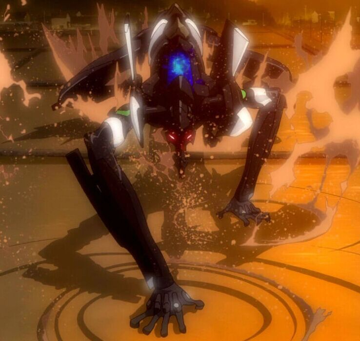
简介
VMware ESX 服务器是在通用环境下分区和整合系统的虚拟主机软件。它是具有高级资源管理功能高效，灵活的虚拟主机平台。
ESXi (现在叫做VMware vSphere Hypervisor)是免费的，基本功能差不多，更小，更安全。
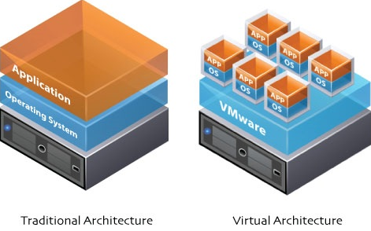
准备
官方下载地址：VMware vSphere Hypervisor 5.5
注册完官方账号后，找到并记下自己的许可证，安装完后用来激活
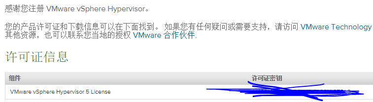
这是花椒CERT社团黑色的“三号机”。
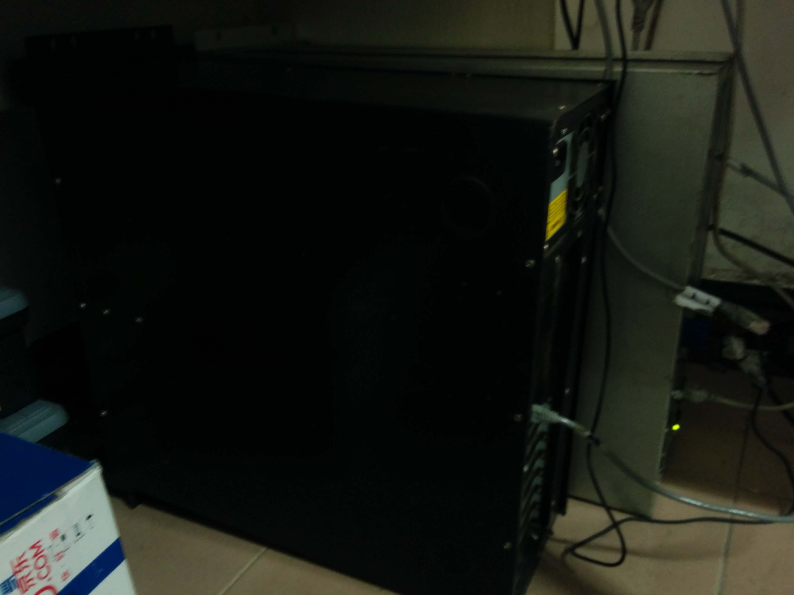
暑假7月27日由于硬盘坏道没能继续折腾，现在准备好了继续。
安装
方法1：USB启动安装
由于我的U盘装了Kali，暂时不想折腾了。想用U盘安装的可以装个大白菜，老毛桃，anywlan之类的做成启动盘，然后用它们来装镜像。再或者用UltraISO写镜像到U盘（前提是要备份数据）。
方法2：PXE启动安装
需要用到这个工具，ESXiPXE，需要.NET4.0支持
把它解压，在里面新建一个文件夹，就叫“esxi”吧。
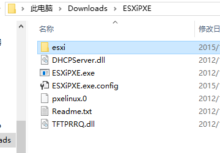
把iso镜像里面的文件放到esxi文件夹里，然后在esxi文件夹里新建一个文件夹，”pxelinux.cfg”。
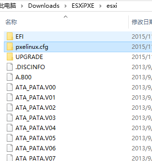
把./esxi/ISOLINUX.CFG这个文件复制到pxelinux.cfg里，改名为default.
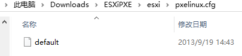
改完之后，找到根目录ESXiPXE.exe.config文件，用文本编辑器编辑
配置好DHCP服务，关键填上ServerIp，172.16.85.177这是我笔记本的ip。
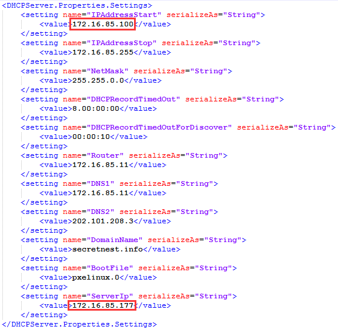
下面的参数保留默认即可(和图片上的一样)。
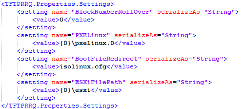
接下来运行ESXiPXE.exe，会提示是否允许访问网络，选择允许。
然后打开三号机，网络启动，三号机会出现pxelinux的菜单界面。
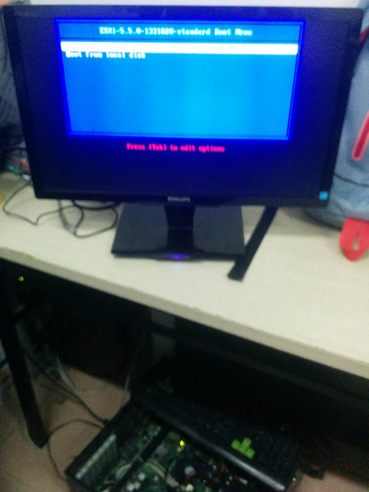
ESXiPXE.exe会出现这些内容。
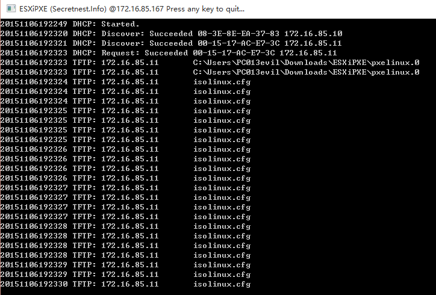
接下来是安装过程
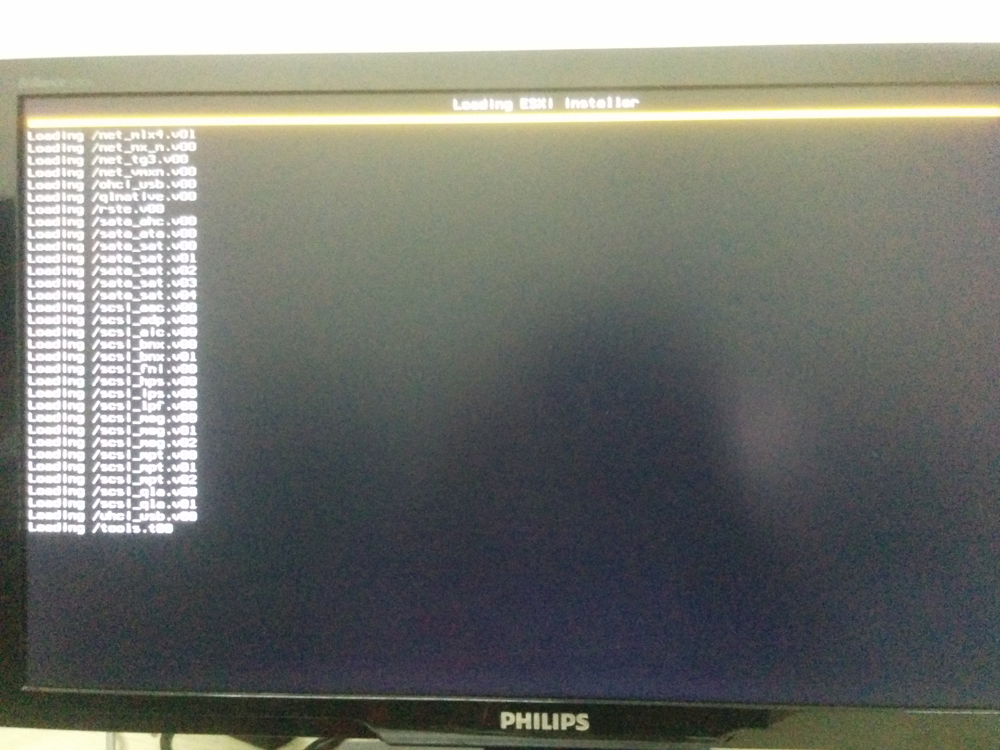
在这张图里可以看到内存只有4G，后面出错的原因也在这里。
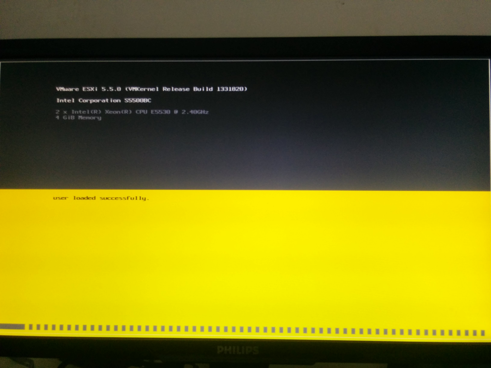
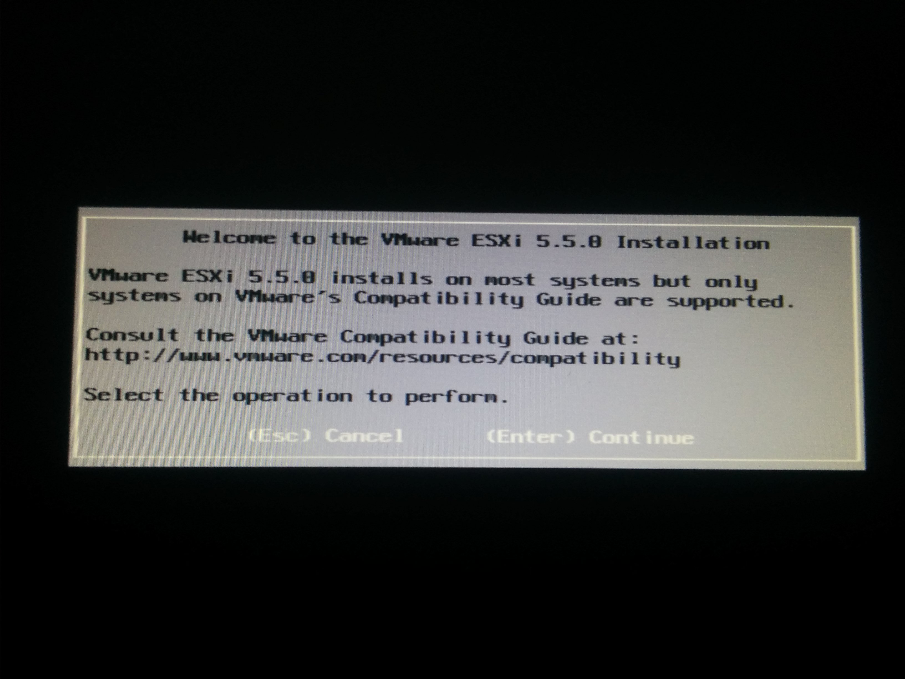
扫描硬盘需要十几秒左右，如果要等一分多钟说明硬盘有问题，暑假就是这样，然后老是卡在29%。
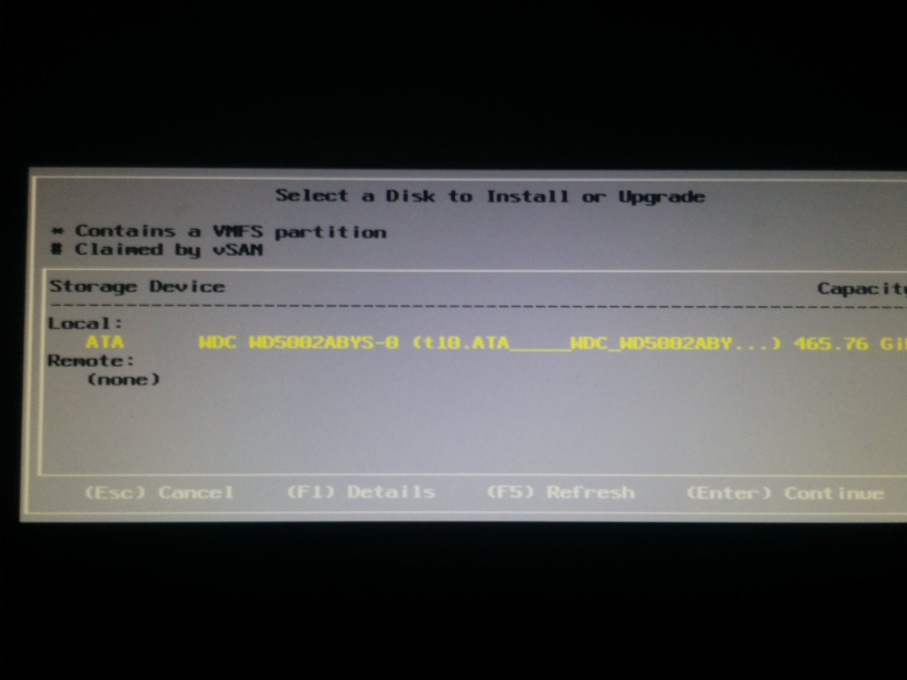
选择英语
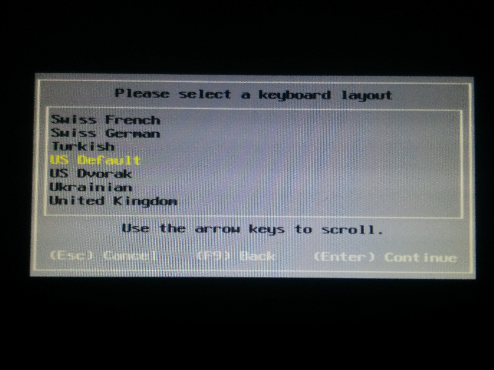
设置管理员密码
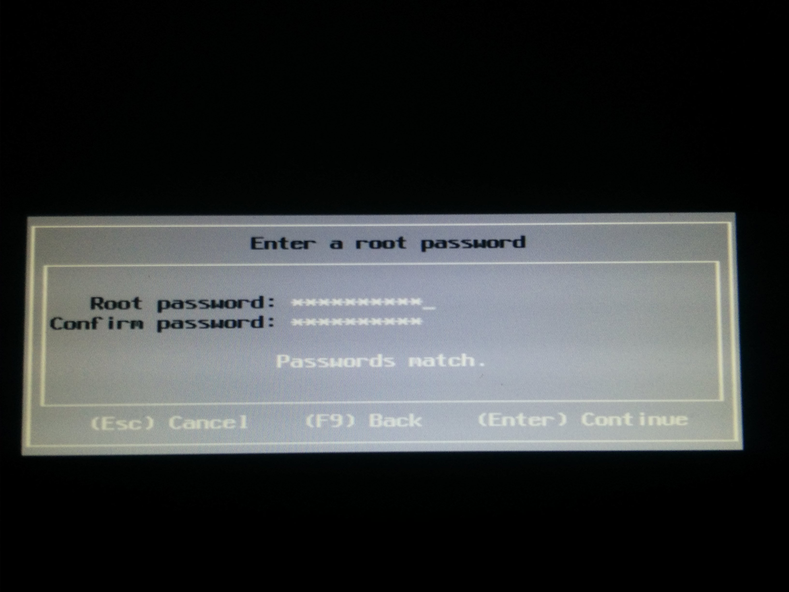
这里出错了，显示内存不够，这台机器有24GB内存，现在插拔一下内存条。
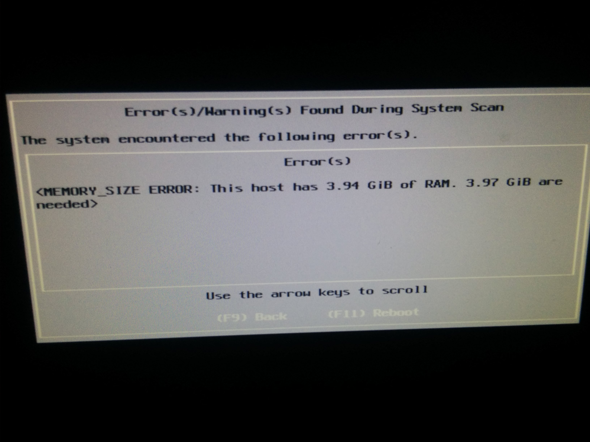
经过几分钟的插♂拔，可以看到内存容量回来了。
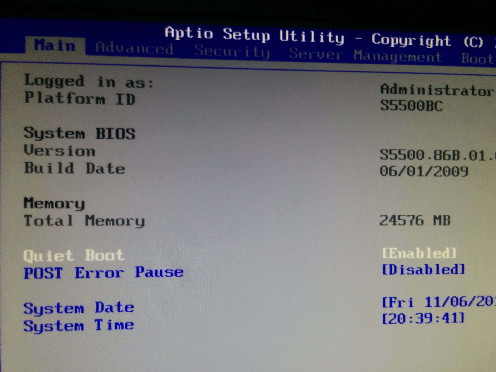
重新安装。

安装完成ლ(╹◡╹ლ)！